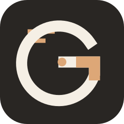
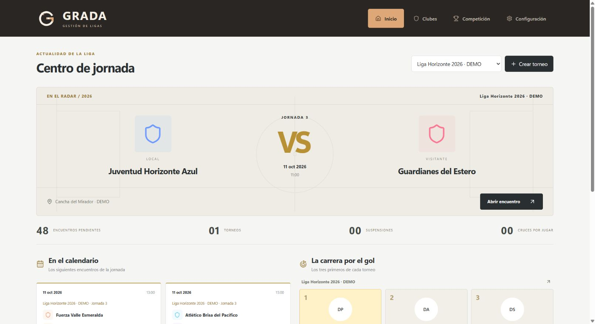

Un lugar para cada club.
Categorías, equipos y fichas de jugadores con fotografía, documento, dorsal y datos personales.

GRADAPOR EXCEL PRÁCTICO Conocer la licenciaDEL BARRIO A LA FINAL
El fútbol se vive en la cancha.
La organización empieza en GRADA.
Equipos, torneos, resultados y documentos en un mismo programa para Windows.
PAGO ÚNICO / DATOS EN TU COMPUTADORA

Captura real · datos de demostración
01 / CONOCE GRADA
Desde el primer inscrito hasta el último gol.
Un espacio para cada momento de tu torneo.
Categorías, equipos y fichas de jugadores con fotografía, documento, dorsal y datos personales.
Marcador, goles, asistencias, tarjetas, presencia e informe. Busca al jugador y registra su acción.
Carnets con medidas y campos ajustables. Hojas de vocalía e informes para imprimir o descargar en PDF.
02 / TU TORNEO, TUS REGLAS
Elige el formato al crear tu competición.
GRADA comprueba que los equipos encajen.
Una vuelta o ida y vuelta. Con cantidad impar de equipos, el descanso rota por jornada.
LIGAConfigura grupos y clasificados. El total que avanza debe permitir formar llaves completas.
DOS ETAPASCuadros de 2, 4, 8, 16, 32… equipos. Llaves completas, sin descansos ni pases automáticos.
MANO A MANODescarga el instalador y abre el programa. El demo dura 48 horas desde la primera apertura y no necesita internet.
En Configuración → Licencia, pega tu clave. La activación necesita conexión; después puedes trabajar hasta 7 días sin internet entre verificaciones.
Crea categorías, inscribe clubes y jugadores, define el formato y genera el fixture. Exporta respaldos para proteger tu trabajo.
GRADA / LICENCIA PARA WINDOWS
Un solo pago. Una computadora.
La gestión de tu liga, todos los días.
Gestión de ligas y torneos de fútbol
Licencia de pago únicoEstamos preparando el lanzamiento.
Próximamente en HotmartWindows de 64 bits · Una computadora
Activación y verificación periódica por internet.
ANTES DEL PITAZO INICIAL
El demo de 48 horas funciona sin conexión. La licencia de pago necesita internet para activarse y verificarse periódicamente; permite hasta 7 días sin conexión desde la última verificación correcta.
No. La licencia es de pago único para una computadora. La verificación por internet comprueba su estado y no es una renovación de pago.
En una base de datos local de tu computadora. GRADA permite exportar y restaurar respaldos. Tus datos de la liga no se sincronizan automáticamente entre computadoras.
El instalador incluye datos ficticios para explorar. Al activar la licencia mientras estás en ese entorno, se guarda un respaldo automático y se limpia la prueba para comenzar tu liga. También puedes hacerlo desde Configuración → Respaldos → Comenzar mi liga.
Sí. Elige el modelo y las medidas de los carnets, decide los datos que incluirás y revisa el PDF. La hoja de vocalía se abre desde cada encuentro. Puedes descargar los documentos o enviarlos a tu impresora.
Este producto es un programa de escritorio para Windows de 64 bits. No incluye una aplicación para Android, iPhone o macOS.
Exporta un respaldo de tu liga antes de cambiar de equipo. La licencia se vincula a la instalación donde se activa; solicita al vendedor la gestión del cambio. Copiar el instalador no transfiere tus datos ni tu activación.